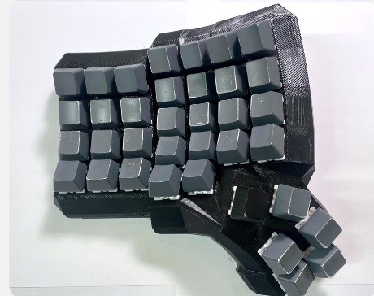
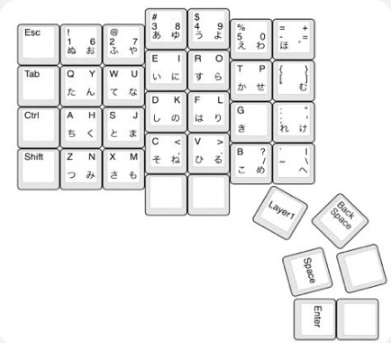

本科4年: タッチタイピング可能な片手日本語入力デバイスの製作
日本語入力に特化した片手キーボードを作るには、ホームポジションに置きながら48キー打鍵できる必要があるため、
2つのレイヤーを切り替えることができるキー数の多いキーボードを製作した
筐体はDactyl Manuformを使用
マイコン: ProMicro
開発環境: Arduino IDE
使用言語: Arduino言語 (C++)
関連画像
図1: 製作した片手日本語入力デバイス
図2: キーレイアウト図